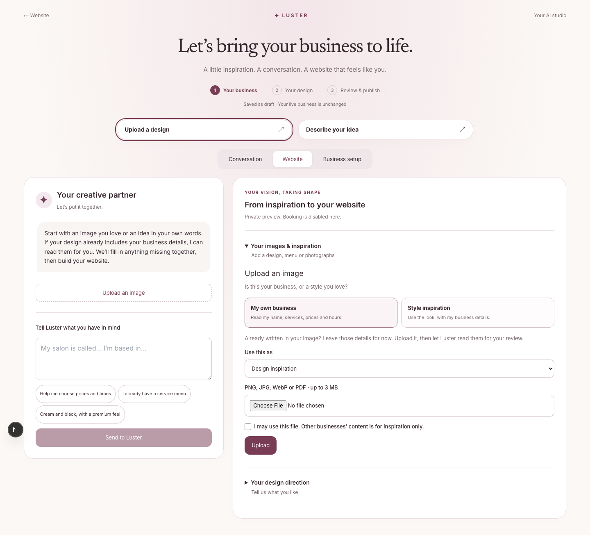
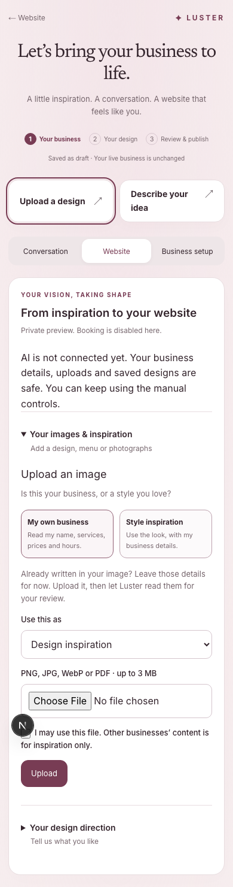

The owner-facing builder, without changing the published booking website. These screenshots show the real application locally with AI calls disabled; hosted real extraction evidence is recorded separately.

